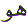
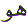

The Arabic Letter
Haa ( ) in the normal Arabic character
set is 27. In the numerical character set, Abjad, Haa (
) in the normal Arabic character
set is 27. In the numerical character set, Abjad, Haa ( )
is the 5th Letter with numerical value 5. This article is about
the spiritual meaning of the Letter Haa (
)
is the 5th Letter with numerical value 5. This article is about
the spiritual meaning of the Letter Haa ( ).
).
The Letter Haa ( ) is a Muqattaat
Letter. That is, it is used as a Letter in the opening verses
of two Chapters of the Quran. These two Chapters of the Quran
are:
) is a Muqattaat
Letter. That is, it is used as a Letter in the opening verses
of two Chapters of the Quran. These two Chapters of the Quran
are:

Since the value of the
Letter Haa ( )
is 5 and it is used 2 times as a Muqattaat Letter we get:
)
is 5 and it is used 2 times as a Muqattaat Letter we get:
5 ( ) times 2 = 10 =
) times 2 = 10 =  which
is Knowledge.
which
is Knowledge.
If we look at the first
usage of the Letter Haa ( ) as a Muqattaat Letter, we find
that it is followed by the Letter Ya (
) as a Muqattaat Letter, we find
that it is followed by the Letter Ya ( ).
Knowledge (
).
Knowledge ( = 10) leads the '0' to '1'. Knowledge
comes from Allah through Hidayat
= 10) leads the '0' to '1'. Knowledge
comes from Allah through Hidayat
 Guidance.
And Hidayat leads to Knowledge and Knowledge leads to Allah.
Guidance.
And Hidayat leads to Knowledge and Knowledge leads to Allah.
Hidayat is Guidance. How
do we take in Guidance ? We rely on the 5 senses given to us by
Allah. These 5 senses are:
is Guidance. How
do we take in Guidance ? We rely on the 5 senses given to us by
Allah. These 5 senses are:
1- Hearing, 2 - Sight, 3 - Touch, 4 - Taste and 5 - Smell
Everyone of us relies on these 5 senses.
The disbelievers are servants of these 5 senses. The disbelievers want a physical 'form' to worship. They will not believe unless they can 'see' or 'touch' or 'hear' physically with some of their senses.
The believers are masters
of these 5 senses. The
believers use their senses as servants. The believers only rely
on these senses in order to gather information. They accept the
existence of Allah because they have heard
the teachings of Allah through the Messengers ( )
of Allah. After careful consideration they have accepted what
the ears have told them. Muslims are a community of witnesses
because they recite the Shahadat. A Shahid
is one who witnesses There
is no god only Allah Muhammad is the Messenger of Allah with his / her intelligence based
on the information gathered by the senses.
)
of Allah. After careful consideration they have accepted what
the ears have told them. Muslims are a community of witnesses
because they recite the Shahadat. A Shahid
is one who witnesses There
is no god only Allah Muhammad is the Messenger of Allah with his / her intelligence based
on the information gathered by the senses.
Hidayat is knowing the truth from falsehood. Hidayat is controlling our 5 senses to be our servants and not our masters. What do we find in Quran ?
We find in the Quran:
(To keep the article short and simple, only one example will be shown per sense)
What we can eat and what is forbidden - Taste
What we can see and what is forbidden - Sight
What we can touch and what is forbidden - Touch
What we can hear and what is forbidden - Hearing
What we can sense with our nose - Smell
An important point to note is that 4 of the 5 senses are localised to the organs, namely smell, sight, taste and hearing. But the sense of touch is spread all over the body.
Why do we need to control the 5 senses ?
Because the punishment or reward is based on these 5 senses.
Since the sense of touch is spread all over the body, the punishment of burning in the fire is the most difficult to bear. May Allah have Mercy on everyone of us.
How do we control the
5 senses ? By taking 5 steps, and then again another 5 steps.
5 + 5 = 10 =  Knowledge. The first
5 steps are Wudu.
Knowledge. The first
5 steps are Wudu.
Step 1 is a body free of impurities.
Step 2 is clothes free of impurities.
Step 3 is saying Bismillah Hir Rahman Nir Raheem at the start of Wudu.
Step 4 is performing the Wudu.
Wudu is essentially washing or cleaning the 5 senses. We need to wash the hands (touch), the mouth (taste - 3 times), the nose (smell - 3 times), the face (eyes are included in this - touch and sight - 3 times), the arms (touch - 3 times, starting with the right arm and then repeating with the left arm). Run moistened hands from forehead, over the head to the back of the neck and back to the forehead (touch). Then we wipe the ears with moistened fingers (hearing), and finish of with washing the feet (touch - washing the right foot first and then the left foot).
To conclude the Wudu we take the fifth step.
Step 5 is the recitation of Kalima Shahadat:
Notice that we have to clean the sense of touch in the Wudu in 5 stages.
The other 5 steps are the 5 Daily prayers.
There are 5 prayers (Salah) per day. These are Fajr, Zuhr, Asr, Maghrib and Ishaa. The purpose of the prayers is to communicate with Allah. The purpose of the prayers is to keep remembering Allah throughout the day and the night. The purpose of the prayer is keep ourselves pure physically and spiritually. The purpose of the prayer is to attain 'nearness' to Allah.
If we look at the numerical values of the names of the prayers:
Fajr = 283 = 200 ( ) + 3 ()
+ 80 (
) + 3 ()
+ 80 ( )
)
Zuhr= 1105 =
200 ( ) + 5 (
) + 5 ( )
+ 900 (
)
+ 900 ( )
)
Asr= 360 =
200 ( ) + 90 (
) + 90 ( )
+ 70 (
)
+ 70 ( )
)
Maghrib= 1242 =
2 ( ) + 200 (
) + 200 ( )
+ 1000 (
)
+ 1000 ( ) + 40 (
) + 40 ( )
)
Ishaa= 372 =
1 ( ) + 1 (
) + 1 ( )
+ 300 () + 70 (
)
+ 300 () + 70 ( )
)
If we add all of the above totals we get :
283 + 1105 + 360 + 1242 + 372 = 3362
If we reduce the overall total to a single digit we get :
3 + 3 + 6 + 2 = 14
1 + 4 = 5
= 
The 5 prayers
are named in such a way that the overall total numerical values
of all their names can be reduced to the number 5 which
is the numerical value of the Letter Haa ( ).
That Letter Haa (
).
That Letter Haa ( ) is connected to
Hidayat
) is connected to
Hidayat  -
Guidance. The Hidayat came from Hu to His
Messengers (
-
Guidance. The Hidayat came from Hu to His
Messengers ( ) and they in turn
taught it to their communities.
) and they in turn
taught it to their communities.
Hidayat comes from Allah. And Allah is Hu . Husent
the Hidayat  Guidance
to a Hadee Guide
chosen by Him. That Hadee Guide
is Muhammad
Guidance
to a Hadee Guide
chosen by Him. That Hadee Guide
is Muhammad  . That Hidayat
. That Hidayat  is recorded for
us in the Quran.
is recorded for
us in the Quran.
May Allah and His Rasool
 Guide us and keep us on True Guidance.
Ameen.
Guide us and keep us on True Guidance.
Ameen.
| BACK |